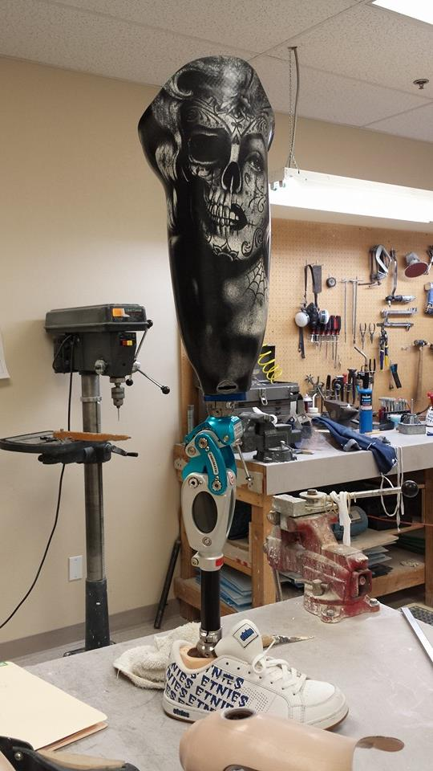
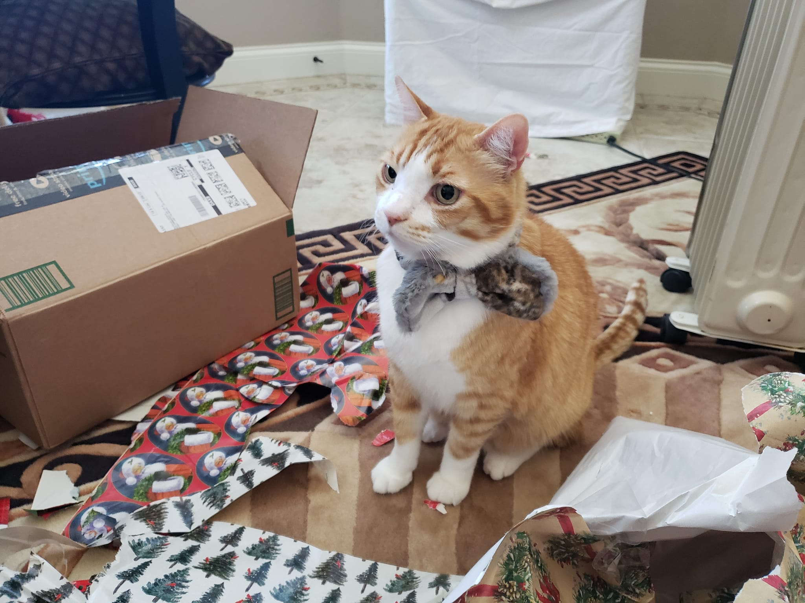

About Me
My name is Richenda and I work at a small, family-owned O&P clinic in Los Angeles County, California. While I’ve helped out in various ways over my lifetime, I’ve been working there continuously for the past five years, including throughout the challenges of the COVID-19 pandemic.
While my mother lovingly refers to me as a "gofer," what that often translates to is me getting done what needs to get done and filling the role of whatever is needed in the moment. My hands-on experience spans patient intake, insurance benefits and eligibility, prior authorizations, medical billing and claims, collections, coding, medical documentation, interfacing with outside physicians and mid-levels, contracting, and denials/appeals. This breadth of exposure has given me a unique understanding of how patients, providers, and payers all interact.
Academically, I hold an Associate of Science in Computer Science from College of the Canyons and am currently pursuing a Bachelor of Science at the University of California, San Diego. I plan to graduate in Fall 2025.
I hope to continue advocating for both patients and providers in the ever-shifting landscape of the U.S. healthcare system. My long-term goal is to build thoughtful, effective programming solutions that make it easier to navigate care, simplify workflows, and ease the tension between the provider-patient dynamic.
Thank you for visiting. I hope you find something here that supports you — whether you’re working in the field or trying to get the care you deserve.
For my full resume: LinkedIn.